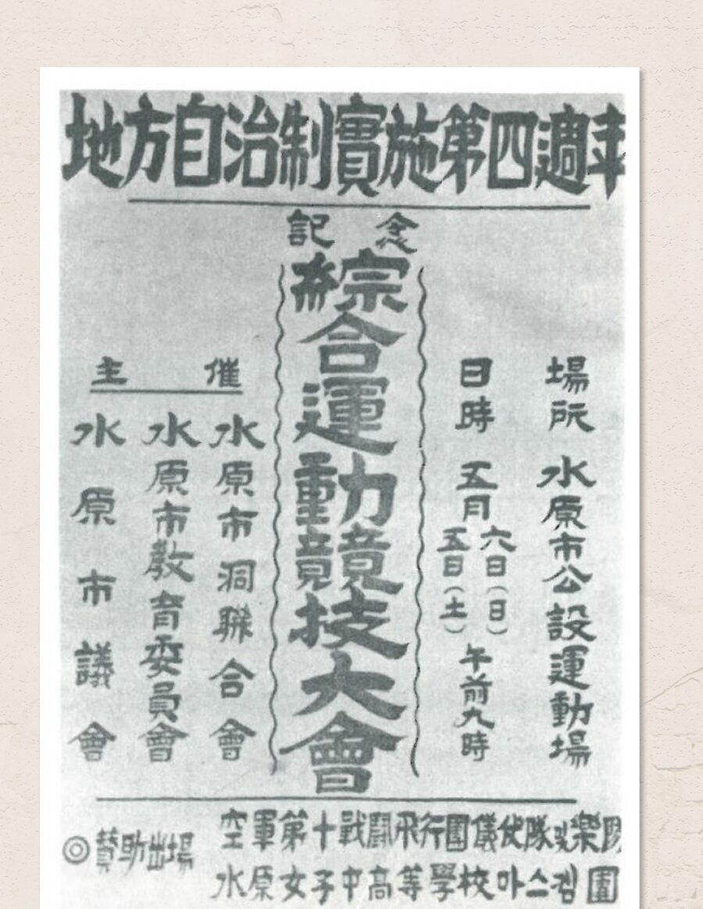
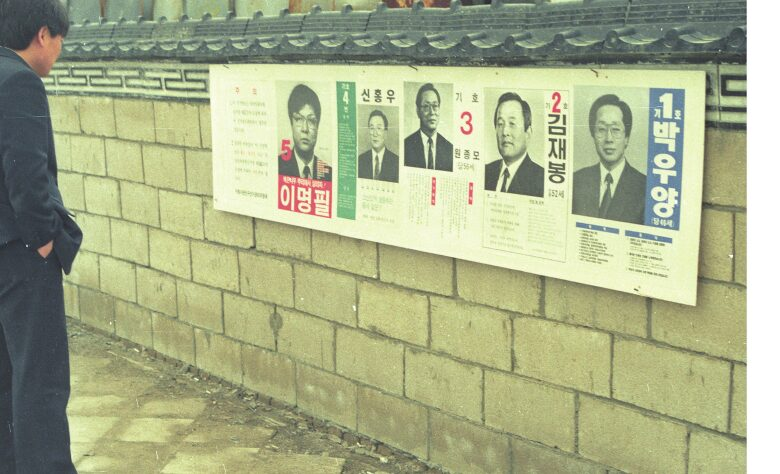
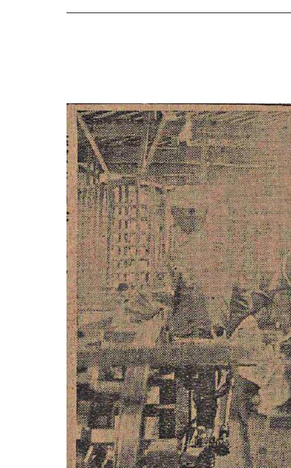

대표

지방자치 4주년 기념 경기대회
1956 포스터수원박물관 소장
수원의회사는 1920년대 면협의회에서 1991년 지방의회 부활 이후까지, 수원의 지역 대표들이 어떤 사람들이었는지를 기록하는 디지털 아카이브입니다. 『수원시의원으로 살다』 2장 「수원시의원들의 사회적 배경」에 실린 사진과 신문, 선거 자료를 모아 누구나 찾아보고 인용할 수 있도록 공개합니다. 제한선거 시대의 자산가에서 농업 종사자, 그리고 시민운동가와 여성 의원에 이르기까지 — 지방 자치의 얼굴이 어떻게 바뀌어 왔는지 살펴보세요.

수원박물관 소장

『동아일보』 1월 19일

차인순 유족 제공

수원시의회 소장

중앙선거관리위원회 소장

수원박물관 소장

수원박물관 소장

수원박물관 소장

『매일신보』 6월 6일